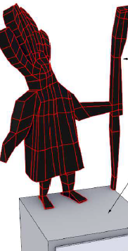
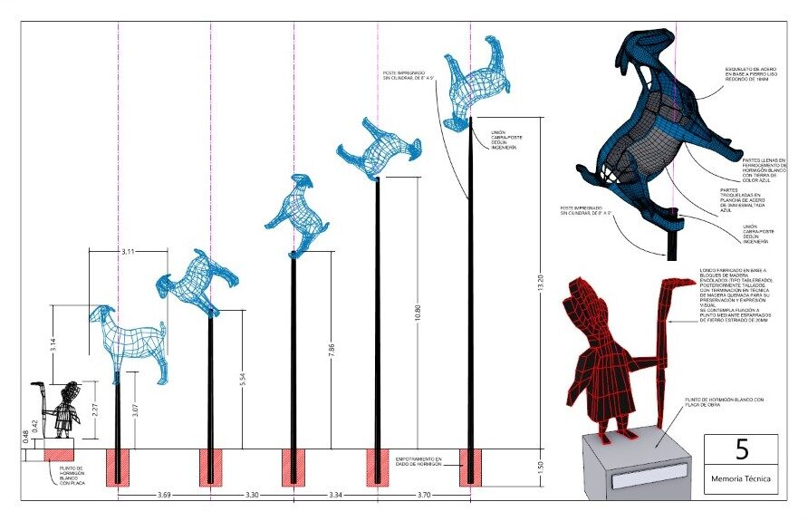
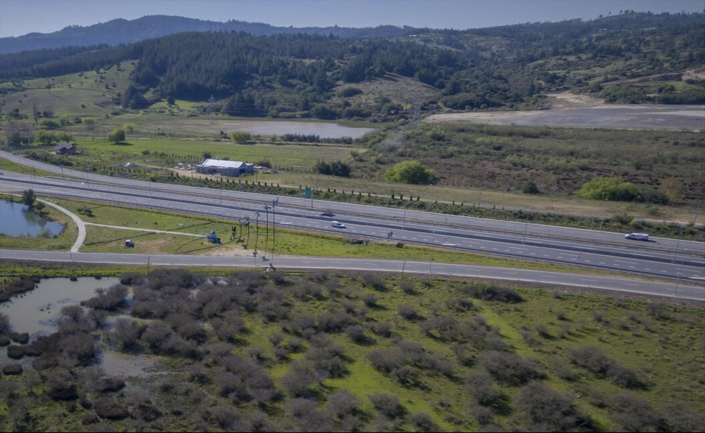
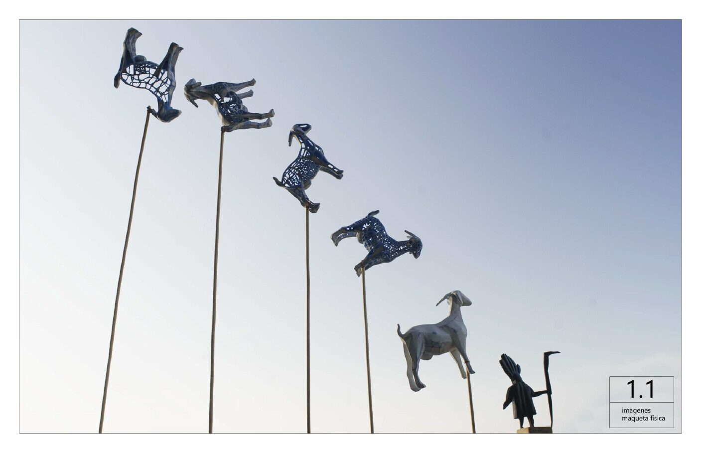
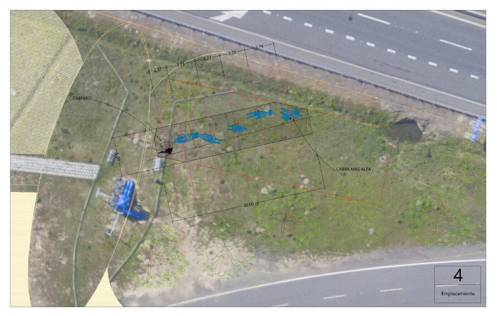

Proyecto Nº 002
Pieza de Paisaje / El Cabrero
Proyecto de intervención en el área de juegos de Tomeco, Región de Bio-Bio, en conjunto con Jorge Aguayo. Un Lonco fabricado en base a bloques de madera encolados, posteriormente tallados, con terminación en técnica de madera quemada para su preservación y expresión visual.
Las cabras
Cabras de partes llenas en ferrocemento de hormigón blanco con tierra color azul; cabras de partes troqueladas en plancha de acero de 3mm esmaltada azul. Unión cabra-poste según ingeniería, a alturas crecientes sobre el patio de juegos.





UbicaciónÑUBLE · BIOBÍO
36°59′S · 72°37′O